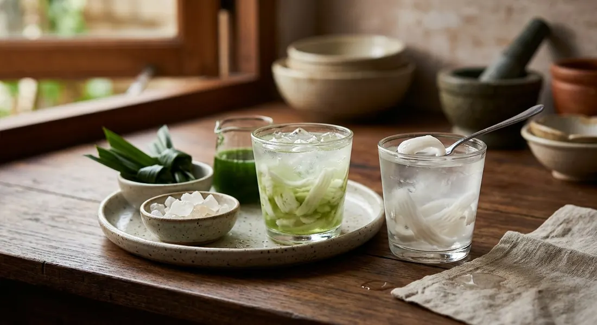

Young coconut water and its jelly-soft flesh, over ice — Thailand's natural electrolyte drink, drunk straight from the nut or finished with a pandan syrup.

น้ำมะพร้าวอ่อน is less a recipe than a harvest: nam ma prao, coconut water, from on — young — fruit whose flesh is still a spoonable, translucent jelly. KRUA.CO's version of the drink specifies the น้ำหอม coconut, the fragrant variety Thais grow for drinking, and treats the water as the finished drink itself: nothing added, nothing boiled, just ice. The only real cooking in their recipe is a side pitcher of pandan syrup, boiled with leaves tied in knots, so each glass is sweetened to taste and the drink stays "หอมนวลเย็น" — softly fragrant and cool.
The Pantip comparison of fresh and roasted coconut water explains what happens when heat does get involved. Fresh water, never heated, keeps its vitamins, live enzymes and electrolytes — potassium, magnesium, the lot — and tastes lightly sweet-sour depending on the nut's age. Roasted (เผา) nuts are charred whole over a low fire until the husk smokes; the water inside takes on the smoky scent and turns sweeter and rounder, though the vitamin C and enzymes go with the fire. The fresh drink wins on nutrition, the roasted one on perfume.
And the street version is a trust exercise. A Pantip thread on telling real from mixed coconut water records the vendor rules: real water is sold in bags, from a stall with whole nuts beside it, and the seller cracks the fruit in front of you — one commenter's regular vendor refuses to pre-bag the water at home "for fear the customer won't believe her". Wongnai's home cook goes the other direction entirely, simmering the water with a pandan leaf and ginkgo nuts into a warm, sweet bowl for five; TrueID's shop blends it with condensed milk and ice and sells it by the 16-ounce cup.
| Thai | English | Amount |
|---|---|---|
| น้ำมะพร้าวอ่อน (น้ำหอม) จาก 2 ลูก | Young coconut water (nam hom variety) | 2 cups |
| เนื้อมะพร้าวอ่อน | Young coconut flesh, scooped from the nut | to serve |
| น้ำแข็งสำหรับจัดเสิร์ฟ | Ice | to serve |
| น้ำ | Water (for the syrup) | 1 cup |
| ใบเตยหอมใบใหญ่มัดเป็นปม | Pandan leaves, tied in knots | 2 leaves |
| น้ำตาลทรายหรือน้ำตาลกรวดบุบ | Sugar, or crushed rock sugar | 1 cup |
| น้ำใบเตย (ใบเตยหั่น 2 ถ้วย ปั่นกับน้ำ 1 ถ้วย กรอง) | Pandan water (blended with water, strained) | ¾ cup |
The shop blend (TrueID, ร้านน้ำชาห้องส่องร้านดังมาแรง): per 16-ounce glass — 120 ml young coconut water, 30 ml sweetened condensed milk, 40 ml evaporated milk, 40 ml fresh milk, 30 ml sugar syrup, 100 g cut coconut flesh and a heaped glass of ice, blended smooth with a few pieces of flesh kept back to garnish; the syrup version swaps the water for 20 ml of young-coconut syrup and 20 g of creme dissolved in hot water, for when fresh nuts run out. The warm bowl (Wongnai, หมวย หาดใหญ่): water from 2 young coconuts boiled 10 minutes with a pandan leaf, then the flesh and 25 ginkgo nuts added for 10 minutes more with a cup of sugar — served hot or over ice.
Heat or not. KRUA.CO and TrueID's blend use the water raw and chilled; Pantip's comparison sides with raw for nutrition — but the roasted nut (มะพร้าวเผา) is a legitimate school of its own, sweeter and smoky, and Wongnai simmers the water with pandan and ginkgo into a warm drink. Three temperatures, one ingredient.
Sweetening. KRUA.CO keeps the syrup in a side pitcher so the drink itself stays unsweetened; Wongnai dissolves a whole cup of sugar in the pot; TrueID's shop sweetens with condensed milk and syrup, adjustable to the customer.
Fresh or syrup. TrueID's second formula is built on bottled young-coconut syrup — "the smell and taste are close to nam hom if you have no fresh coconuts" — which a street vendor selling the real thing would never pour, judging by the Pantip market rules.
The flesh. KRUA.CO treats the flesh as part of the drink, scooped and served with it. The Pantip market guide counts the flesh as the tell: real coconut water comes with plenty of it, mixed water comes with a sliver — enough that "buy where they crack the nut in front of you" is the thread's closing advice.
This recipe is translated from the following Thai-language sources. Where they disagree, we've said so.
1. KRUA.CO — "น้ำมะพร้าวใบเตย" by บุปผา กิตติกุล, สำนักพิมพ์แสงแดด (the recipe used here) — krua.co
2. TrueID Food — "แจกสูตร!! น้ำมะพร้าวนมสดปั่น 16 ออนซ์ ทำขายสุดปัง" by ร้านน้ำชาห้องส่องร้านดังมาแรง (the shop blend) — food.trueid.net
3. Wongnai — "มะพร้าวอ่อนแปะก๊วย" by หมวย หาดใหญ่ (the warm ginkgo version) — wongnai.com
4. Pantip — "น้ำมะพร้าวสด VS น้ำมะพร้าวเผา ดื่มแบบไหนให้ประโยชน์มากกว่า" (fresh vs roasted, and the nutrition case) — pantip.com
5. Pantip — "ดูยังไงว่าน้ำมะพร้าวที่ซื้อมา แท้หรือ ผสม" (the market rules for real coconut water) — pantip.com